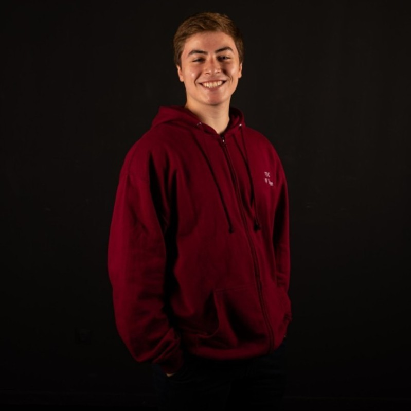
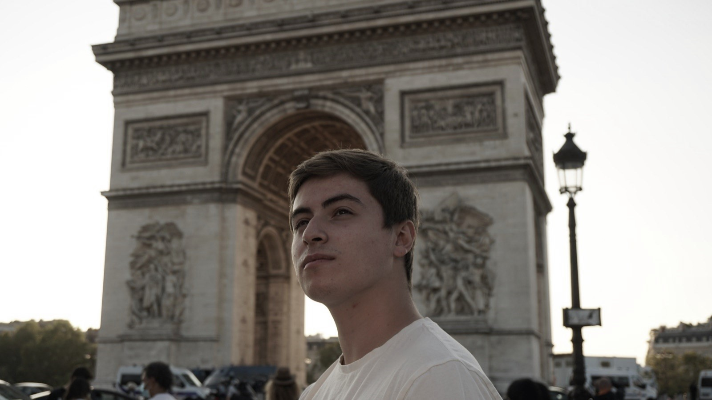
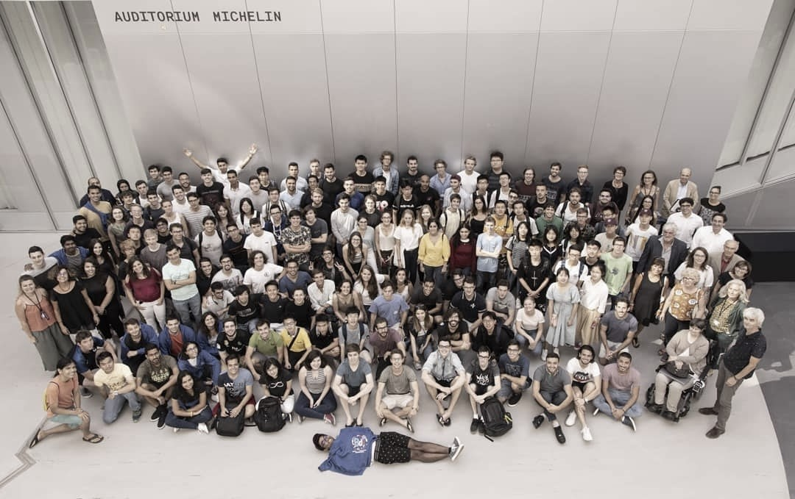
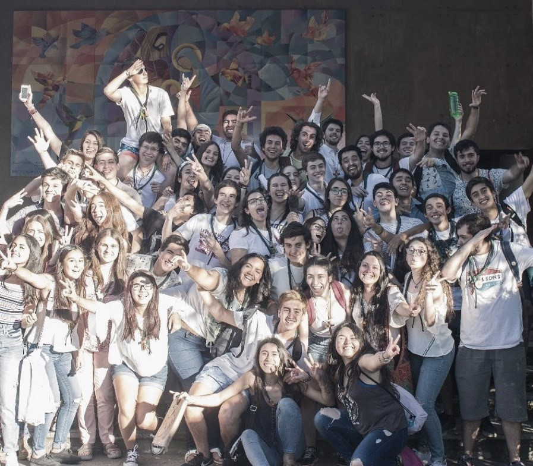
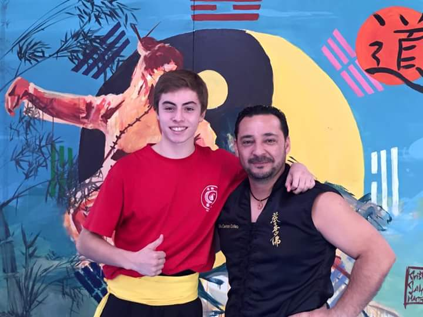
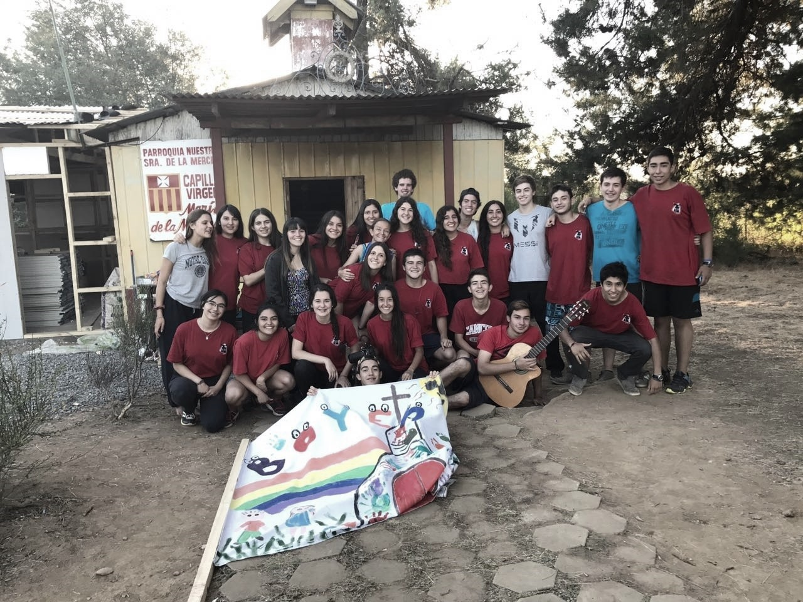
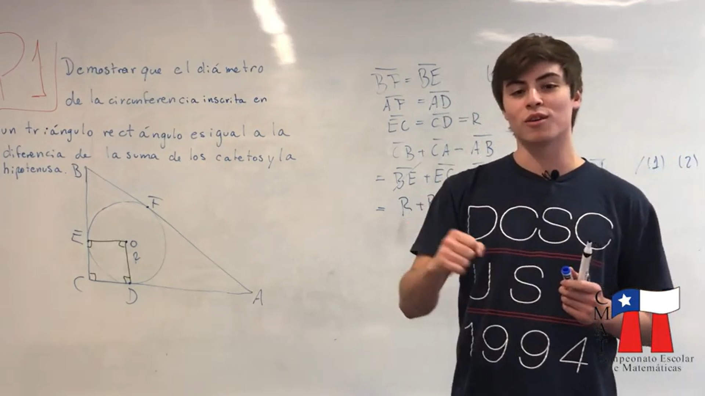
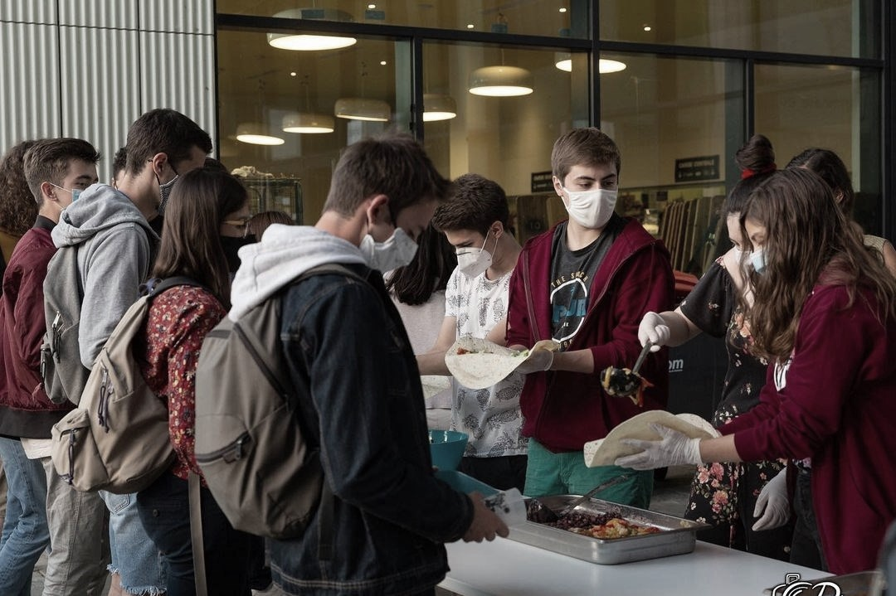

Who am I?
Hello there! I'm Cristian, borned in Chillán, Chile. I'm a senior student on Mathematical Engineering with a Computer Science focus with a double degree between Universidad de Chile, Chile and École CentraleSupélec, France. I'm a quick learner and ambitious enough as to seek making big contributions to the world in Mathematics and Computer Science.
What I am looking for?
I'm currently interested on end-of-studies internship or job opportunities in the Software Industry, either applied or for research purposes. My ideal job is one that gives me enough responsability and ownership, but still allows and encourgaes exchanging point of views with collegues. I'm always looking for new challenges to continuously improve in all possible senses.
My Passions
I really enjoy traveling, spending time with friends, meeting new people and different cultures, and practicing languages. I like cooking when I have time, and running or working out a few times a week. I also like to wonder, to think without a paper nor a pen about problems or just life. I believe music is one of the best boosters for everything: working, relaxing and having fun, specially when dancing.
Study Abroad Experience
As part of a double degree agreement between the University of Chile and the group of Grandes Écoles Centrales, I was given the opportunity to study two years in Paris at CentraleSupélec. To encourage this experience, I was granted the Eiffel Excellence Scholarship by the Ministry of Europe and Foreign Affairs. Thanks to the high proportion of international student there, I was able to recognize the cultural differences that can arise when working with people from all continents. Furthermore, this experience whet my appetite for discovering new cultures and learning languages.
 Clubs Joined
When I was at School, I was in Arkontes, a Scout-like organization that aimed to develop human values on young people through reflections and analyses. During the last two years of High School, I was accepted to help guiding younger students in this way as an assistant.
At the same time, I used to train Kung fu at Fo Li Cai Chile, where I enjoyed pushing my mind and body to their physical limits. I also learned self-defense, traditional forms and some weapon handling. I became purple-belt when I had to move to Santiago for university.
During summers at high school, I took part of a team and helped people living in poverty. Together, we built a community center and houses on their neighborhood.
While in the Universidad de Chile, I wanted to help organizing the scholar mathematical championships that I enoyed so much. So I joined the CMAT, and worked suggesting problems and grading tests. Later on we decided to launch a Youtube channel, where we solved step by step problems of the championship.
At CentraleSupélec, I was a member of the BdI, Bureau de l'International, who aims to spread different cultures in the campus through activities such like cooking, activities and events. In particular, I was in charge of the Language Tandem, an instance were two people that speak two different languages and want to learn the other can improve their skills.
